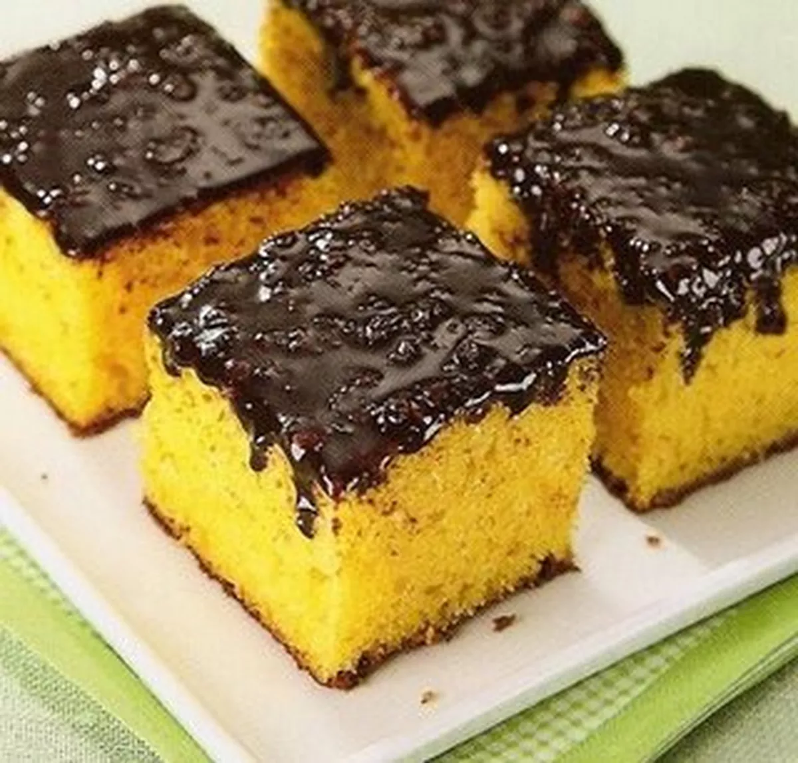

INGREDIENTES
MASSA
2 cenouras médias, cortadas em cubos 300g
1/2 xícara de chá de 125ml
3 ovos
1/2 xícara de farinha de trigo 210g
1/2 xícara de chá de amido de milho60g
2 colheres de chá de fermento em pó 8g
1 xícara de chá de açucar 190g
COBERTURA
1/2 xícara de chocolate ao leite derretido
1/2 xícara de creme de leite
MODO DE PREPARO
MASSA
Em um liquidificador, adicione a cenoura, os ovos e o óleo, depois misture
Acrescente o açúcar e bata novamente por 5 minutos
Em uma tigela ou na batedeira, adicione a farinha de trigo e depois misture novamente
Acrescente o fermento e misture lentamente com uma colher
Asse em um forno preaquecido a 180° C por aproximadamente 40 minutos
COBERTURA
Despeje em uma tigela a manteiga, o chocolate em pó, o açúcar e o leite, depois misture
Leve a mistura ao fogo e continue misturando até obter uma consistência cremosa, depois despeje a calda por cima do bolo
